Just had a quick chat with Mike about the HGT work and where I was and what my next set of plans are.
Now, to formalize the relationship I expect to find [this is a bunny trail --ed.]:
Higher bonuses (HGT_UPTAKE_BONUS_FRACTION) will overcome high probability of HGT recombination (HGT_UPTAKE_P).
Submitted Parameter Sweep Jobs, Part 1
Submitted jobs 201, performing a sweep of the bonus, from 0.1 - 32.0, at HGT_UPTAKE_P of 0.1.
The following jobs have to wait until there's room in the queue.
Submitted Jobs and Pulled Down some Data
Woooo! The 201 runs finished (at 25 replicates, per), so now I can get a grip on the sweep stuff. Pulling it down to my computer now.
Ok, was able to submit about half of 204 until I ran out of queue. Edited the run list file in anticipation of being able to submit more items. Probably tomorrow. Also reduced the run count to 25, which I had forgotten to do earlier for some reason. Ooops.
Preliminary Bonus Parameter Sweep Figures (Run 201)
Ok, some figures!
All Bonus Levels
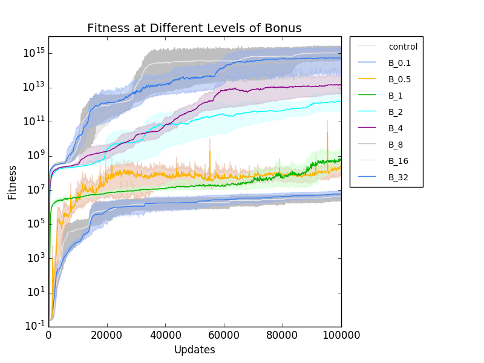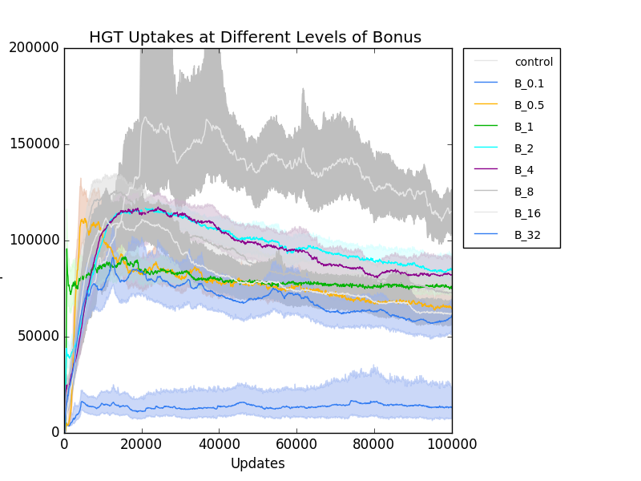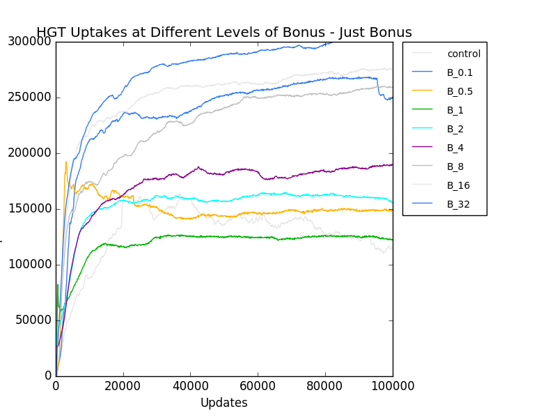
Individual Bonus Levels
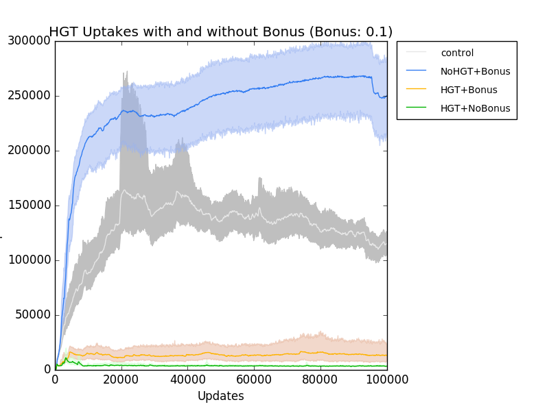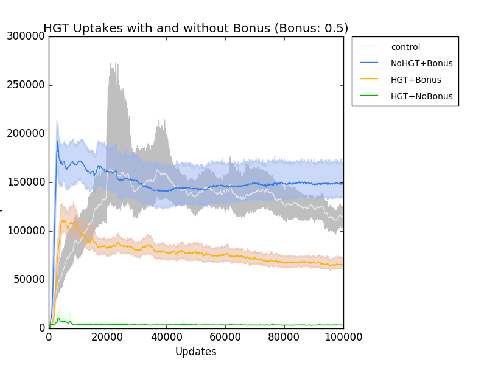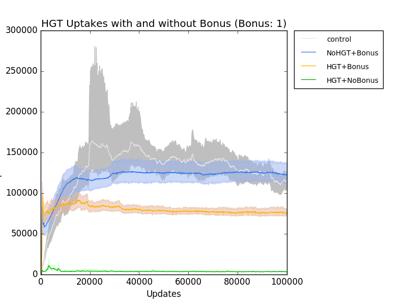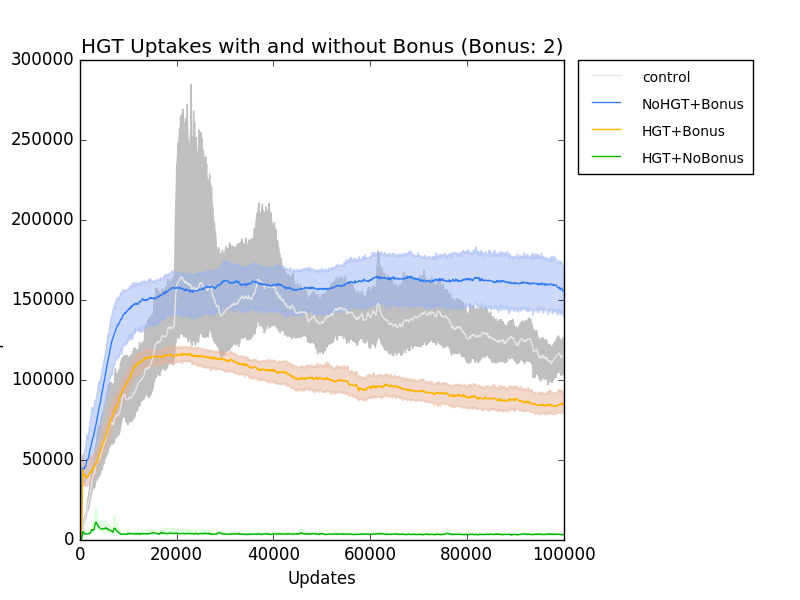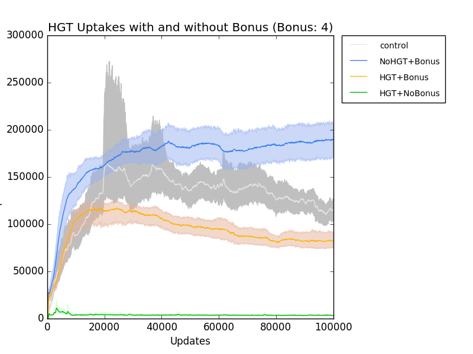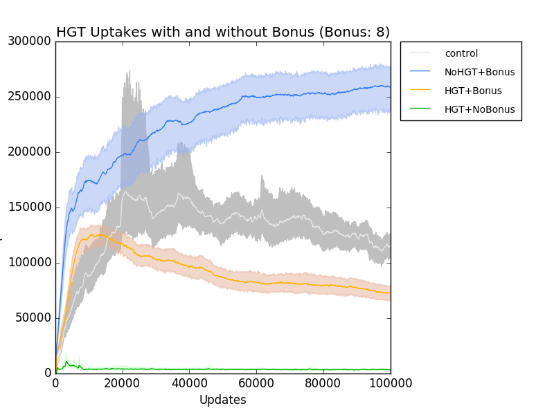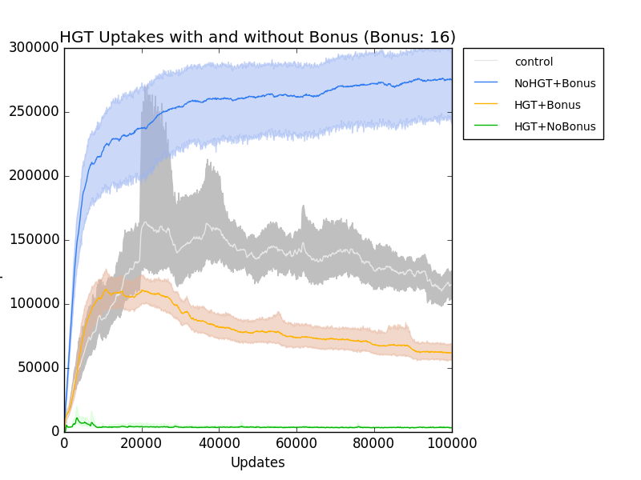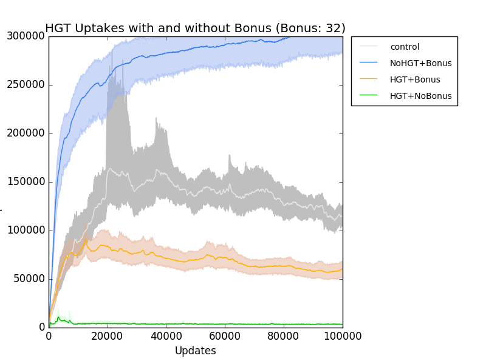
Obviously, there's something funny going on here around the <1 boundary.
Bugs and Bunny-Trails
Indeed something is wrong around the <1 boundary. Many things discussed, along with Charles shooting the shit about how my code might actually be right, and there's some other subtle thing going on. I disagree. I think it's a bug.
Otherwise, Mike Wiser things there might be a relationship between the realized recombination rate in all the Probability runs. I'll look into it.
Relationship between Signal-Based Plasticity and Mutational Plasticity - A Link in Evolutionary Ancestry?
Chatted with Alex about his plasticity work, and we think we've worked out a way that we can collaborate. I'm going to send him my populations from run 082, and he'll try to use them as ancestors and measure how long it took for them to evolve plasticity, since he's seeing that his plastic organisms have intertwined and potentially mutationally plastic ancestors in their lineages. So, it's possible that in order to get plasticity, you ahve to go through a set of organisms that do what mine do.
Didn't do anything yesterday. Just class then fucking off in the evening.
Fractional Bonuses Bug FOUND!
Figured out the dumb bug with fractional bonuses. It was always saving the new bonus as an int, so any fractional term was getting cut off, and thus it always sat at 1. Don't really know why 1.25 should act different than 1.5. Both should have cut off to 1. So... ?? ¯\_(''-)_/¯. (the face should be represented via: ツ but this doesn't work.) Running those runs again.
Recombination Rate
Per conversation during the lab meeting, I'm going to plot the recombination rate and see if that's what they're mostly pegging to.
Re-Do Prob Sweep with fixed Bonus code
Right, so I did a bunch of analysis and runs. In particular, I've re-run the Probability Sweep using the fixed bonus code (Run 205), because, while I'm not sure it has an important effect, better safe than sorry.
Genome Size - Bloating
Further, also based on eye-balling, I think the organisms are super-bloating when the HGT probability is low. In order to test the implications of this, I'm submitting a probability sweep with fixed length (206). More analysis later.
Recombination Rate Bunny Trail
Regarding the recombination rate, they don't seem to be pegging it to anything in particular, based on the eyeballing. I'm afraid that it would also be a huge bunny-trail to dig into this. Going to stick with the other stuff for now.
So, I fixed up the last bit of my analysis script set so that it dumps stuff out more nicely.
Uptake and Recombination Rates by Probability.
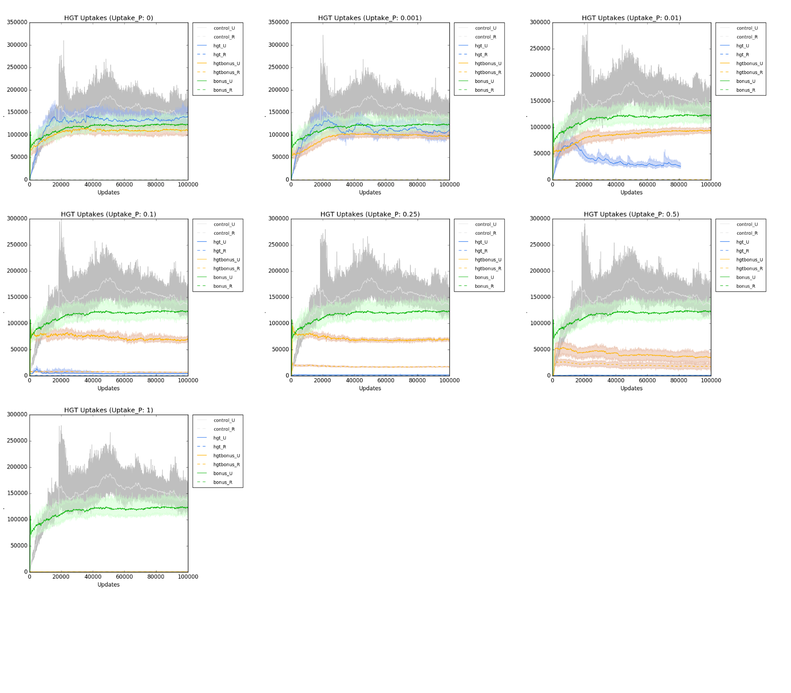
One thing to notice is that in P_0, bonus_U doesn't track perfectly exactly with hgtbonus_U. The reason for this is that with bonus_U, the boolean in the instruction that flags hgt is off. In the if-statement, this flag gets checked first, thus, the flow shortcuts after hitting the !hgt, and never pulls a random number to see if it should go into that block. So, even though the program flow appears to be the same, in the hgtbonus scenario, the random number does get pulled (even though it's always going to fail). This means that we end up with different random numbers for hgtbonus-P_0 vs bonus-P_*. They mostly overlap each other in their error bars, so that's just fine. It's just worth noting. I could fix this by switching the order to check the probability number before checking enable/disable, but I'm not sure that this would prove anything.
Ideal Probability Sweet-Spot
Otherwise, this confirms that I want to use the P = 0.1. It most clearly shows continued activity of the uptake when both uptake and bonus are enabled, but when there's no bonus, Uptake drops to very low levels.
Genome Length
The other thing of note is that I plotted out the size of the genomes based on the different probabilities of HGT occurring.
I think they're trying to get as many HGT instructions in there as possible, when the risk is low. Get it hot while the getting is good. As soon as the prospect gets more risky, they don't bloat. This jives with the amount of HGT execution that goes on.
So, you get a bonus.
P0: If it's low risk, DO IT A LOT. As a result, bloat your genome with it HUZZAH GALORE WOO PARTY, but you don't bloat as much as you possibly could, BECAUSE...
P0.001: You get a bonus, aaand there's a mild chance that it'll bite you. Not hard, not a lot, but enough to make you bloat a little extra. So, you have HGT Instruction Bloat + Disruption bloat as a result of the HGT Recombination biting. So, you're even fatter than you would be if you just had HGT_INST filling up your cooter.
P0.01: Ok, you still get a bonus, so you bloat with HGT Instructions. And, you're still disrupted by ... stuff. Are you qualitatively different from P0.001? Probably not.
P0.1: Ok, now we're starting to feel the bite. This is too much, so you cut back on the HGT_INST usage. There's still a fair bit of bloat. Is it HGT_INST or is it just other random crap?
P0.5: Fine, fuck you. I'm bloated, but I'm really not doing as much HGT_INST. So, this is the hard bit.
P1: OH SHIT NO. Not going to put HGT_INST in me. That's just dumbass shooting myself in the head. Also, not bloated, Nya Nya.
Control: Ok, there's no risk of HGT_INST hurting me, but it also can't make me swell because it's not tinkering. So, I might have quite a few HGT_INST in me, but I'm not bloated. So, the HGT_INST might be getting executed A LOT, but they aren't happening because they're a lot of them in me. Kapisch?
TL;DR: HGT_INST-mediated disruption causes bloating of the genome, because it's disruptive, and you gotta work around it.
So, the way to find out is to do a survey of the actual count of the HGT instructions in the genome. Either do a straight count, or also do a proportion. Unfortunately, I'm not gathering this information, and I may have to extract it from the population files. :/
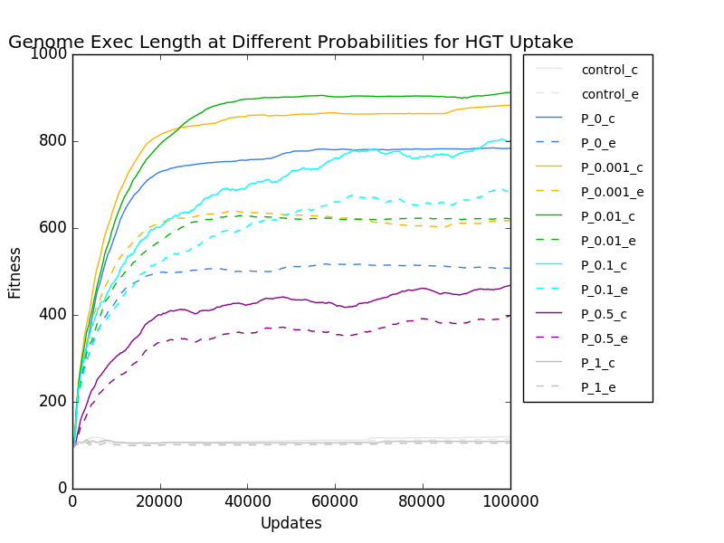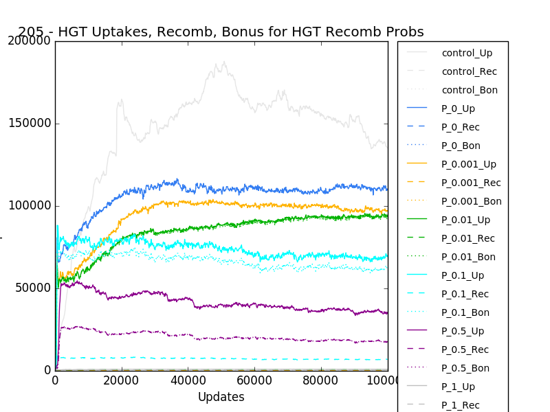
Extracting the living final populations from the .spop files.
caninoko@dev-intel14:~/horizontal_gene_transfer_basics/output/205_HGT_VarLength_ProbSweep$ for i in *_205*; do cd $i/data_*/; pwd; python ~/research_scripts/common/extract_line_on_condition.py 5 ">0" detail-100000.spop > living__detail-100000.spop ; cd ../../; done
This goes through, and finds all the lines in the file that have living exemplars. Next step is to pull the data over. I'll do that via rsync, since I can avoid copying over old files. This copy might take a while. :/
caninoko@dev-intel14:~/horizontal_gene_transfer_basics/output/205_HGT_VarLength_ProbSweep$ for i in *_205*; do cd $i/data_*/; pwd; gzip living__detail-100000.spop ; cd ../../; done
Gzipped, which deflates them about 5-fold. So, it won't be soooo terrible.
rosiec@heimdall[1467]:~/Dropbox/School_Docs/Research/HGT/raw_data$ rsync -crapv --exclude="avida" --exclude="*spop" --exclude="*cfg" --exclude="*org" --exclude="*.sh" --exclude=".out" --exclude="*arrayjobs.txt" --exclude="lstring.out" --exclude="run.log" --exclude="checkpoint.blcr" caninoko@hpcc.msu.edu:~/hor*/out*/205* ./
Copying. Going pretty fast. Next, I unzip them.
rosiec@heimdall[1471]:~/Dropbox/School_Docs/Research/HGT/raw_data/205_HGT_VarLength_ProbSweep$ for i in *_205*; do cd $i/data_*/; pwd; gunzip living__detail-100000.spop.gz ; cd ../../; done
This is going to suck up stupid amounts of Dropbox, so I'm going to need to discard the local copies of the spops when I'm done.
This bit is going to take a custom script, which I'll write in iPython notebook. We'll see how that goes. I'll go in the 205 dataset. Brb.
Right, so here's more or less what I did, since I couldn't for the life of me figure out how to get it to work in the notebook.
rosiec@heimdall[1548]:~/Dropbox/School_Docs/Research/HGT/raw_data/205_HGT_VarLength_ProbSweep$ PROB=P_1_bonus; rm ${PROB}_HGT_instructions.csv; for i in *${PROB}_205*; do cd $i/data_*/; python2 ../../../../../research_scripts/common/count_instructions.py "A" living__detail-100000.spop >> ../../${PROB}_HGT_instructions.csv ; cd ../../; done
Ooops, scratch that. I was able to sorta get it working in the notebook. So refer to that for the specifics. Next is plotting it out, ideally in a bar chart of some sort.
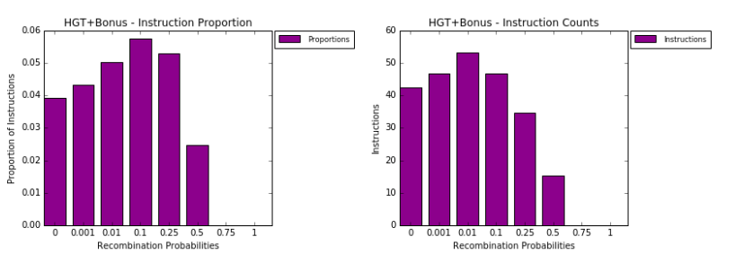
My 206 runs finished. Data is being pulled down, and I'm pretty much just repeating the 205 analysis on them.
fitness, hgtbonus - uptake, recomb, bonus rates, just hgt - uptake, recomb, bonus rates.
HGT Uptake rates for the various treatments, at different recombination probabilities
Even at fixed length, P 0.1 is still the most promising pattern.
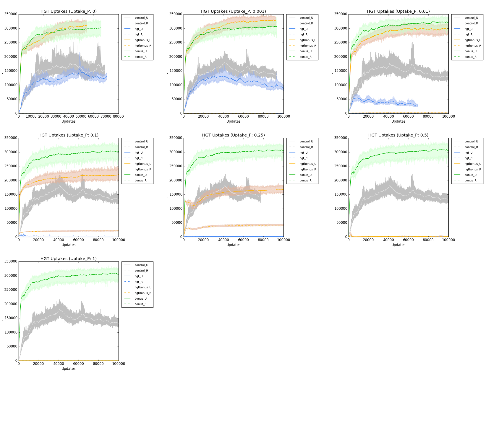
Genome Copied and Executed Lengths:
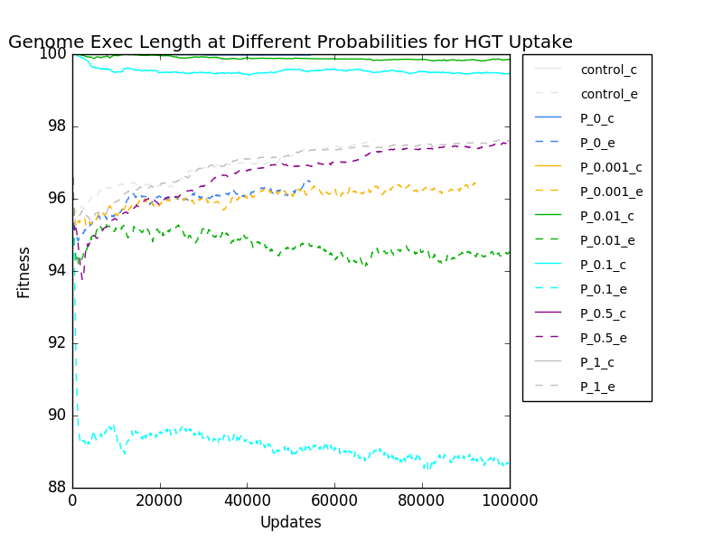
Note the scale. The Y-axis (which is mislabeled, sorry) starts at 88. :P
Instructions and Proportions of Instructions
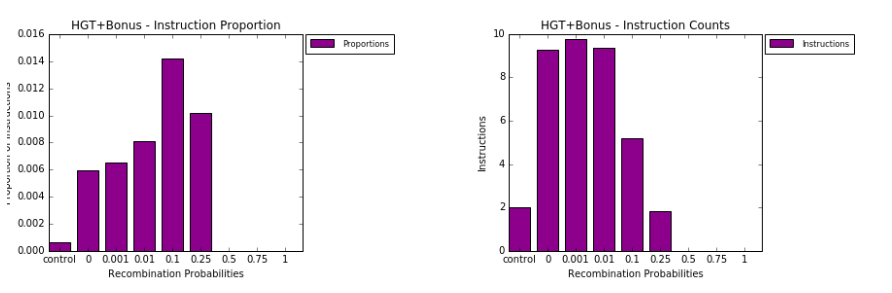
In general, I don't really know what the differences mean, except that in this case, obviously, the organisms are prevented from bloating. What that does to their various incentives, I have no idea.
Re-running the 201 run with the fixed Avida. Id like to set 207 going (fixed-length version of 201), but 201 takes up 800q, even with only 25 replicates a piece.
Some conclusions about 206 - Fixed Length is Plucky; Sweet-spot is still good between 0.1 and 0.25. I prefer 0.1, because it doesn't completely destroy no-bonus.
Fixed-length seems to make them behave with more ingenuity. Despite being so much shorter, and having such a lower proportion of HGT_UPTAKE instructions (0.014 vs 0.05, 5-fold fewer), they manage to execute just as many HGT uptakes as the variable-length ancestor. An example of constraint potentiating evolution?
Recombination rates peak at the 0.25 probability level. More than that, they use the instruction much less; less than that, the bonus gets used, but the recombination probability is very low, so it never shows. The recombination rate at P of 0.1 and 0.25 are quite similar, though the Uptake rate is quite decreased at 0.25. It's like some major tension point, or a maximization point. Some kind of balanced tension at that level. Probably just a coincidence.
Further Experiments
Do bonus sweeps around 0.1, 0.25 and 0.5, to see if we can bring up the HGT level with increased bonuses. If the bonus can encourage more use, then it should be visible with the straight 0.1 bonus sweep, and confirmed with the 0.25 and 0.5 Probability levels.